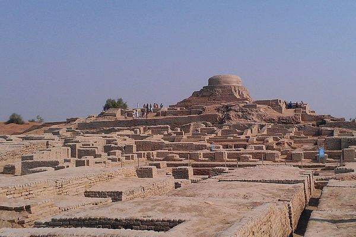

The history of Pakistan preceding independence in 1947 is shared with Afghanistan, India, and Iran. Spanning the western expanse of the Indian subcontinent and the eastern borderlands of the Iranian plateau, the region served as the fertile ground of a major civilisation and the gateway of South Asia to Central Asia and the Near East.
Ancient Beginnings
Situated on the first coastal migration route of Homo sapiens out of Africa, the region was inhabited early by modern humans. The 9,000-year history of village life in South Asia traces back to the Neolithic site of Mehrgarh in Pakistan.
Prehistoric Pakistan
Mehrgarh
One of the world's most important Neolithic sites, Mehrgarh dates back to 7000 BCE. Located on the Kachi Plain of Balochistan, its residents lived in mud-brick houses, cultivated barley and wheat, herded sheep and cattle, and fashioned tools from copper. It represents the earliest evidence of farming and dentistry in South Asia.
The Indus Valley Civilisation
Flourishing from around 2600 to 1900 BCE, the Indus Valley Civilisation was one of three great civilisations of the ancient world. At its peak it hosted a population of approximately 5 million, spread across hundreds of settlements. Its cities — notably Harappa and Mohenjo-daro — featured brick buildings, sophisticated drainage systems, and multi-storey houses.

Historical Timeline
- 7000 BCE — Neolithic settlement at Mehrgarh, Balochistan
- 2600–1900 BCE — Flourishing of the Indus Valley Civilisation
- 1500 BCE — Aryan migrations and Vedic period
- 500 BCE — Persian Achaemenid Empire includes Sindh and Punjab
- 326 BCE — Alexander the Great reaches the Indus River
- 711 CE — Arab conquest of Sindh; arrival of Islam
- 1526 CE — Establishment of the Mughal Empire
- 1857 — End of Mughal rule; British Crown takes direct control
- 1940 — Lahore Resolution demands a separate Muslim homeland
- 14 August 1947 — Pakistan achieves independence
- 1971 — East Pakistan becomes the independent state of Bangladesh
- 1973 — Pakistan's current Constitution is enacted
The Road to Independence
The movement for a separate Muslim homeland was championed by the All India Muslim League under Muhammad Ali Jinnah, known as the Quaid-e-Azam (Great Leader). The 1940 Lahore Resolution formally demanded independent states for Muslim-majority regions. Seven years later, on 14 August 1947, Pakistan came into being as the first country in modern history to be created in the name of Islam.